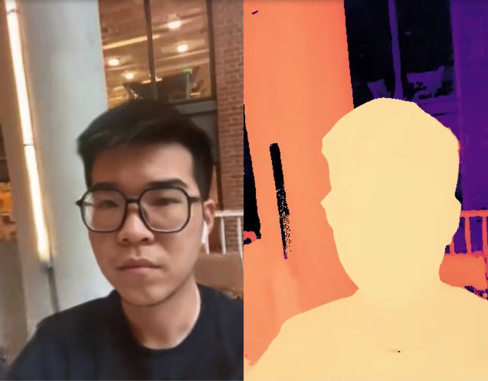
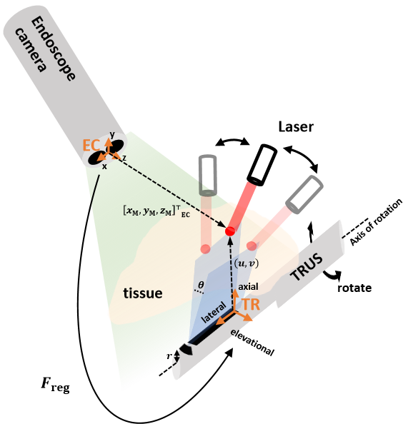
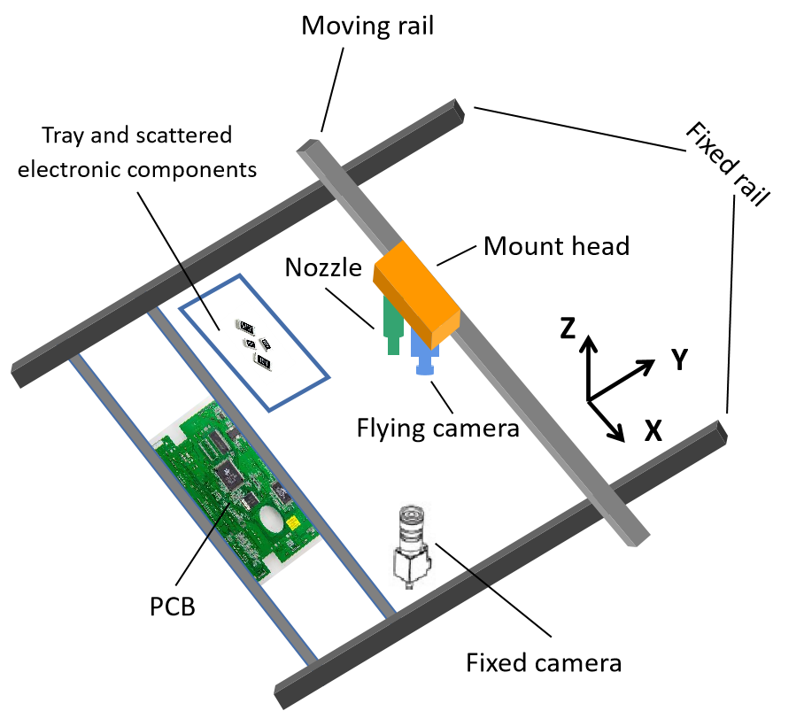

|
Zijian Wu
|
|
I am a second year Robotics M.S.E. student at Johns Hopkins University. Before that, I was a research assistant at the School of Automation Engineering, the University of Electronic Science and Technology of China (UESTC), for one year. I obtained my B.E. degree in Mechatronics Engineering at UESTC, in 2020. I'm interested in applying robotics in the field of medicine and surgery combined with computer vision,
machine learning, and immersive technologies. My research goal is to create a computer-integrated surgical (CIS) system
enabling robots to perceive special surgical or medical scenario and to decide rational actions for clinical
tasks.
E-mail: zwu52@jhu.edu Links: GitHub | Blog | Resume
|
Research Projects
|

|
Neural Radiance Fields for Strep Throat Infection Diagnosis
Exploiting a NeRF-based depth estimation method for auxiliary diagnosis of strep throat infection;
Proposed a method based on NeRF combining learning-based descriptor with depth supervision to tackle
the challenge due to text-scarce surface and lack of views;
Comparing the results of 3D reconstruction and depth estimation with other state-of-art methods on
throat dataset collected by JHH.
|
|

|
Photoacoustic Image Based Intro-Operative Surgical Guidance System in a da Vinci Surgical Robot Platform
Integrated the overall system and implemented the pipeline of endoscope-to-photoacoustic image registration and surgical tool tracking;
Validated the search algorithm for photoacoustic virtual marker’s localization by simulation and experiment;
Proposed and implemented an arc-line registration algorithm requiring no coordinates in the fluorescence image.
|
|

|
Image-based Software System for Surface Mounting Machine
Developed a robust, accurate, and user-friendly vision system for Surface Mounting Machine for precise
positioning, automatic picking, and placing of electronic components;
Built and debugged a prototype of Surface Mounting Machine from scratch;
Improved lighting system and mechanical structure of the prototype.
|
|
Education
M.S.E., Robotics, Johns Hopkins University 09/2021 ~ Present Main Courses: Algorithms for Sensor-Based Robotics; Robot Devices, Kinematics, Dynamics, and Control; Computer Integrated Surgery I & II; Computer Vision; Augmented Reality; Statistical Learning For Engineers; Vision as Bayesian Inference.
Work Experience
Awards
|